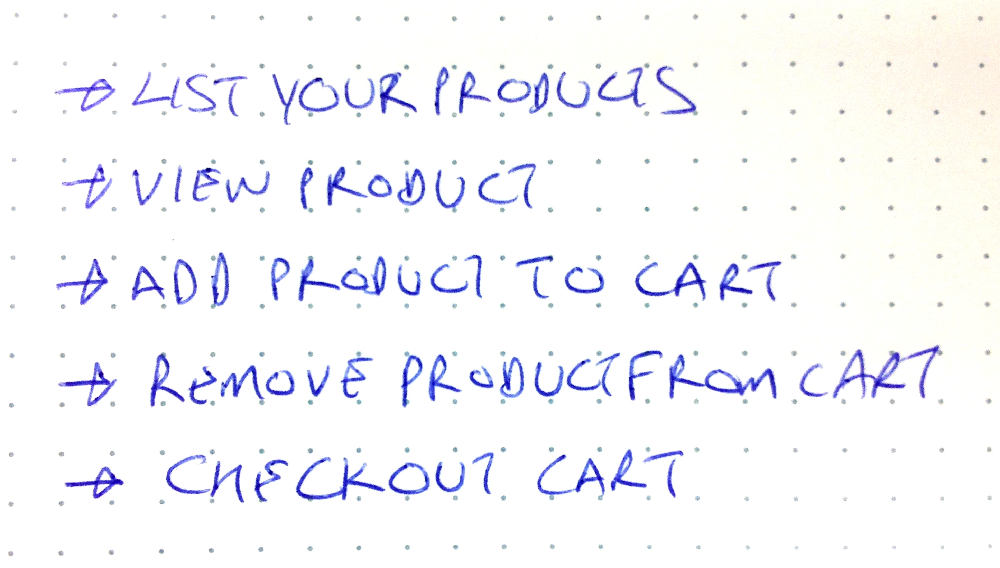

Built it Now, Scale it Later!
This toolkit lets you write clean code that you can scale without needing to refactor. Start with everything in one process, and split it all out onto multiple systems when you need to.
Here's a micro-service (video) that generates identifiers. You send the micro-service JSON objects. It responds with a new JSON object.
← add a JSON message pattern to match
← the pattern is {...,"generate":"id",...}
← the action function for the pattern,
← done is a regular callback function
← send back another JSON message as the result,
which is {"id":"0.123456789"}
← listen for messages (HTTP is the default)
require('seneca')()
.add(
{ generate:'id'},
function( message, done ) {
done( null,
{id:''+Math.random()} )
})
.listen()
Here's a client that connects to the identifier generating service (you could also do this manually over HTTP).
← become a client
← send a message: {"generate":"id"}
← the result arrives via a callback function
← print out the result: {"id":"0.123456789"}
require('seneca')()
.client()
.act( { generate:'id' },
function( err, result ) {
console.log(JSON.stringify(result))
})
Let's put the logic that generates identifiers into it's own module, and add some features. This is just a normal Node.js module.
← export a function for random identifiers
↑ this time, generate formatted identifiers
← export a function for nid-style identifiers
var nid = require('nid')
exports.random = function( args, done ) {
var len = args.len || 8
done( null,
{id: (''+(Math.pow(10,len)*Math.abs(Math.random()))).substring(0,len)} )
}
exports.nid = function( args, done ) {
done( null, {id: nid( args.len || 8 )} )
}
Let's update the identifier service. The service receives JSON objects as messages, and can use pattern matching to decide what to do with them
← add the patterns to match,
and the actions to execute
var id = require('./id-module');
require('seneca')()
.add( { generate:'id'}, id.random )
.add( { generate:'id', type:'nid'}, id.nid )
.listen()
You can also call the service directly over HTTP. The default port is 10101. Here's an example:
$ curl -d '{"generate":"id"}' http://localhost:10101/act
{"id":"28375388"}
$ curl -d '{"generate":"id","type":"nid"}' http://localhost:10101/act
{"id":"8vo0n02o"}
The service is exposed via HTTP by default. You can also use other transport mechanisms such as publish/subscribe or queues.
The pattern matching on the content of the message means you can easily extend and enhance the service. You can also use patterns to split services into smaller pieces as the system grows.
Why Should I Use Seneca?
Get Your Code Organized
Where is the code that does X? Seneca makes it obvious.
Quickly Build Minimum Viable Products
There are lots of plugins that give you things like user accounts, payments, social media, back office admin, all that good stuff.
Write Micro-Services
Easily break everything into little pieces, and deliver them any way you like, even using other languages (gasp).
Why Scale Today When You Can Scale Tomorrow?
Forgot to add a caching layer? Need to refactor technical debt? No you dont.
Enhance, Extend, Evolve
Standard plugins not doing it for you? Bending them to your will does not require API grokking.
Light Touch Integration
Got your own architecture? Fond of a framework? Not a problem, Seneca does not want to take over the world.
Mix and Match Databases and Other Services
Need Mongo for user profiles, Postgres for purchases, and Redis for sessions? All in the same data model? Got it covered.
Get Your Code Organized
Seneca organizes your code into actions that are triggered by patterns. Patterns are not at the same fine-grained level as traditional API methods. Patterns are coarsed-grained. They correspond much more closely to the business use-cases that your system has to offer as features.
This means you can think about your system in a much more natural style, right from the start.
Let's say you're building a simple e-commerce website. What are the use cases?

Define a set of patterns for these use cases:
{case:"list", what:"product"}{case:"show", what:"product"}{case:"cart-add"}{case:"cart-remove"}{case:"checkout"}
{case:"list", what:"product"}{case:"show", what:"product", id:"1234"}{case:"cart-add", product:"1234", cart:"5678"}{case:"cart-remove", product:"1234", cart:"5678"}{case:"checkout", cart:"5678"}
Now, let's say you need to customize the business logic. For
example, if you spend more than $50, you get a discount. You can
easily see that a good place to add this code is in
the {case:"cart-add"} pattern. When you add a new
product to the cart, check the total, and add a discount line item
to the cart if the total is over $50.
Testing
Writing tests also becomes easier. You just need to specify a list of inbound JSON messages, and check that you get the right JSON result back for each one. You are testing at a higher level than unit tests, which means your tests are less fragile. They will tend to break only when you change the actual feature, rather than when you refactor.